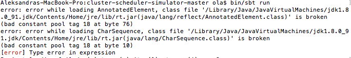

In the first three weeks, I was to prepare myself for the material. In the first week, I read the following research papers: Mesos, Omega and Borg. All three of the papers pertain to methods of optimizing cluster systems between real life frameworks. I was a little bit familiar with the concept from taking CS450, however, these papers obviously went into much more detail than what I was familiar with. I went over these papers several times, taking detailed notes to make sure I understand as much as I can from these. For now, I have no quesitons about these concepts; I am sure some will pop up with practice. However, for now I trust the authors to know what they are talking about. I also met with professor Zhiling Lan and discussed my plans and actions for the next three weeks.
As the first week came to a close, I made sure that I understood the three cluster/scheduler concepts. I finished up my notes and self study. These research papers were taking a long time to comprehend, especially with such elaborate language. The next step I made was to read the following blog, which summarized the papers really well. I have also downloaded the cluster scheduler simulator and the Hadoop simulator. I actually have some trouble with the cluster simulator. After some time and installing packages, I was able to install everything correctly without any errors. However, when I run the command given "bin/sbt run" I get the following error:

I have no idea what to do at this point.I figured it has to do with the Java version(8 instead of 7), however, I can't figure out how to downgrade properly. I do have some hours left to work this weekend, and I will use the remainder of my time this week to trouble shoot this.